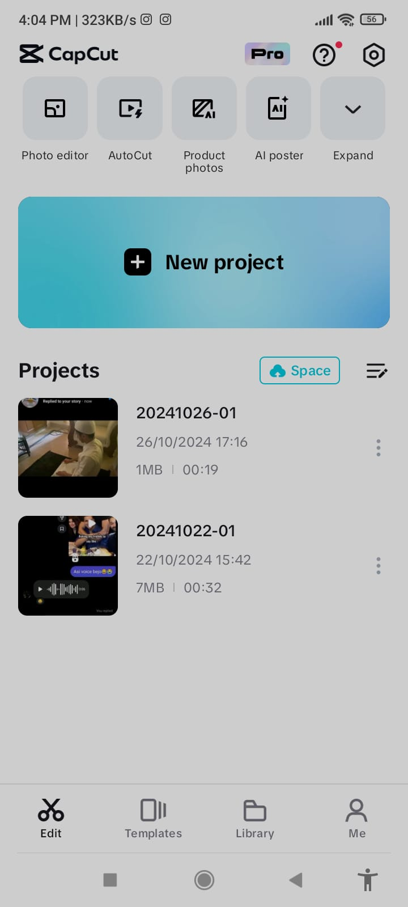

CapCut is a multi-functional program which enables users to process images and videos. With it, you can make your own videos and get paid for them on social networks. CapCut is rather an efficient professional video editing software which you can use to polish videos and photos that you want to post on your social media profiles.
When a person wants to edit a video, they should open CapCut and navigate to the text option to add subtitles and titles to their videos. Users can generate effects based on the sound quality of the videos and export them by applying various effects. CapCut offers numerous templates that can be used to make videos unique and attractive. It is an all-in-one tool for editing videos, allowing users to quickly edit and post their content on any social media platform to earn money.
CapCut Tech is the only app that has collaborated with TikTok so far. There are various types of templates and video styles available, which can be used to edit videos. Users can also find templates of videos they have created themselves, which can be reused. Additionally, professional editors can create their own CapCut templates and share them with newcomers, enhancing their reputation as skilled editors within the CapCut community.
Download CapCut from Google Play Store
April 10, 2020.15.5, latest update on October 23, 2024.
CapCut has become a go-to app for video editing enthusiasts and professionals alike. With its simple interface and powerful features, it's perfect for creating everything from quick social media clips to high-quality professional videos. Let’s break it down step by step so you can get started, make the most out of its features, and level up your video editing skills.
Starting with CapCut is super easy. Here’s how you can dive in:
CapCut is free and available on both Android and iOS devices. Just download it from your app store or play store, install it, and you’re good to go for editing videos. You might want to sign up for a free account to unlock all features.
Once you open the app, you’ll see:
Once your video looks perfect, export it in your preferred resolution. CapCut supports HD exports, ensuring your videos are top quality.
CapCut isn’t just an editing app; it’s a tool that can transform how you create and share videos.
CapCut has built-in tools to create eye-catching videos for TikTok, Instagram Reels, or YouTube Shorts. With trendy effects and templates, your content can grab attention instantly.
The app’s smart features like automatic background removal and auto-captions mean you can focus more on creativity and less on technical work.
One of CapCut’s biggest perks is that you can export videos without watermarks for free. This gives your content a professional and polished look.
If you’re in a hurry, CapCut’s templates are your best friend. Just pick one, drop in your clips, and you’re done. It’s ideal for creating quick but professional-looking content.
If you’re ready to take your videos to the next level, try these:
CapCut works seamlessly with TikTok and other social media platforms. You can edit your videos and upload them directly, saving time and effort.
Once you’ve got the basics down, it’s time to hone your skills and make professional-level videos.
Understanding how to use the timeline effectively is key.
CapCut offers powerful tools like:
For creators and brands, consistency is everything. Use CapCut to develop a signature style by:
CapCut regularly updates its library with new effects and templates. Experiment with these to keep your content fresh and aligned with the latest trends.
The more you experiment with editing, the better you’ll get. Try recreating popular videos or playing with different effects to push your boundaries.